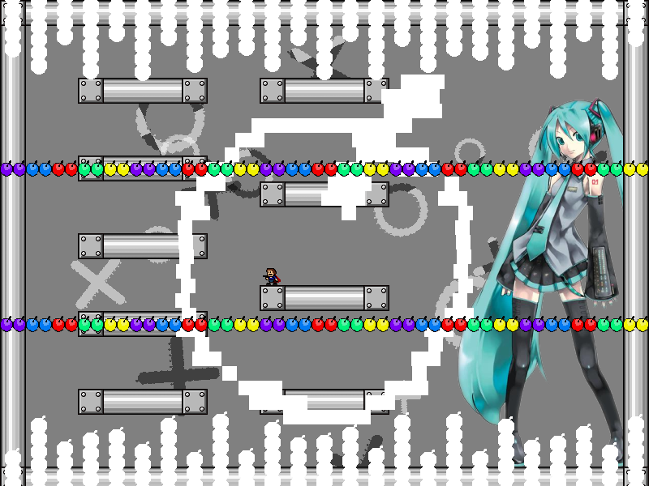
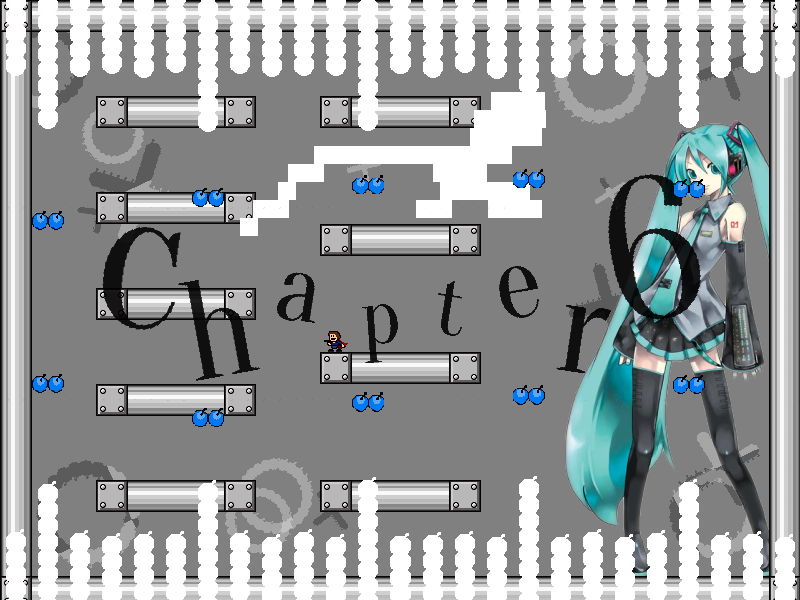
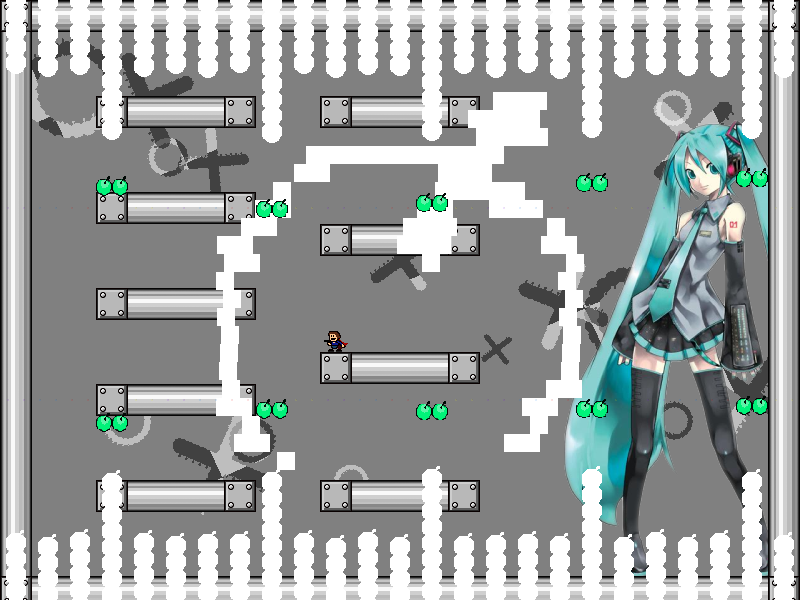
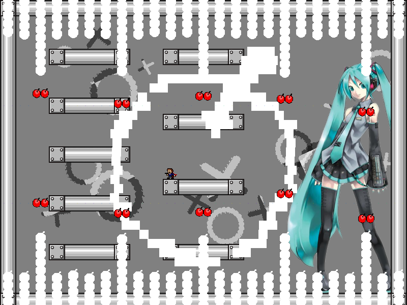
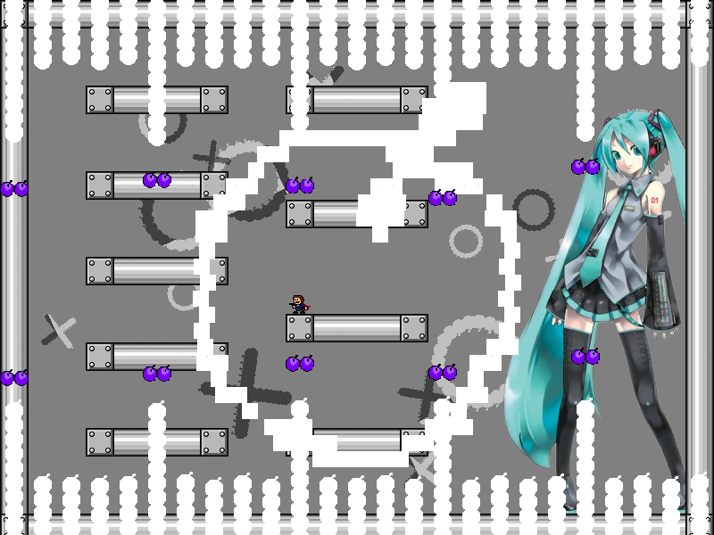
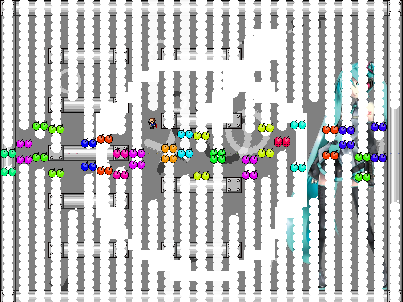

| creator | segment | label | jump |
|---|---|---|---|
| NN | 1:13.60~1:16.80 | Q+P*A*S/Q/Q/Q | double |
消去法を題材とした択一型の弾幕です。
1:14.00~1:15.60において（fig.6-1.1.a~fig.6-1.1.d）、最後まで振動しなかった列が1:16.40における正解の列に対応しています（fig.6-1.2）。




